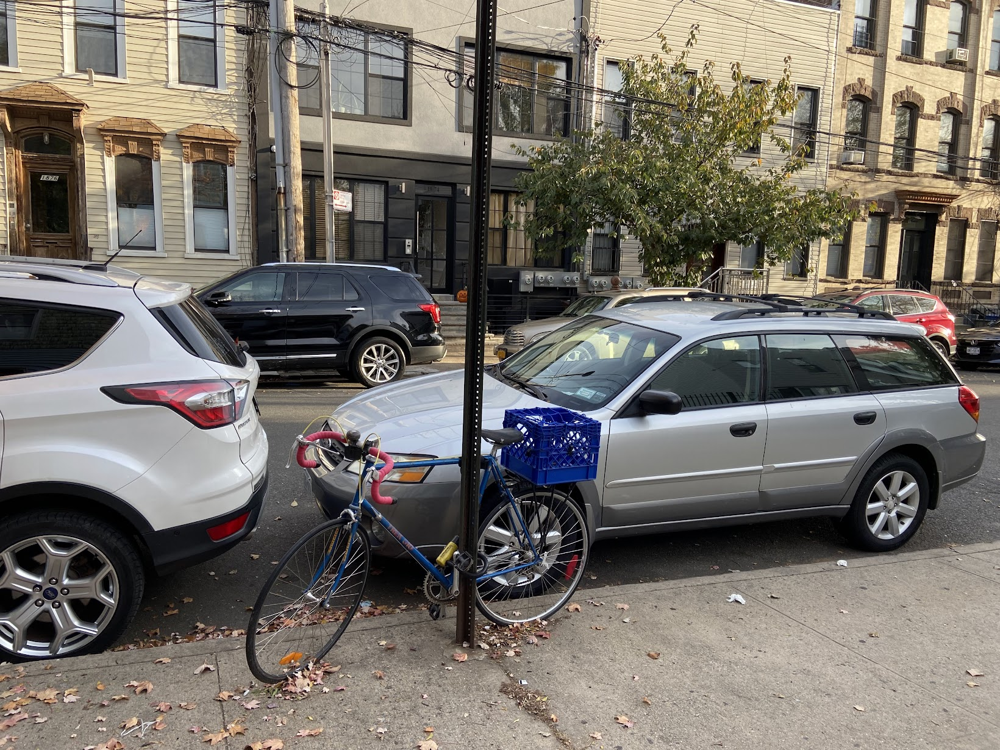

By Tasha Sandoval
Source: NYC Open Data, Motor Vehicle Collisions- Crashes
New York City has experienced an undeniable bike boom since the start of the COVID-19 pandemic. In 2020, cycling in the city grew by 33% as compared to 2019. The pandemic has also brought more new cars to city streets, resulting in greater opportunity for traffic accidents overall. One of the major issues contributing to this rising traffic danger is unsafe speed. Some drivers may have gotten used to driving at fast speeds when the streets were empty back in March and April of 2020. According to data from the New York City Department of Transportation, unsafe speed in at least one involved vehicle is the leading cause of cyclist injury in Queens. Some officials and activists are advocating for the installation of more speed cameras around the city, cameras that are thought to be effective in deterring unsafe driving when they are active. Whether or not these cameras would decrease cyclist-involved accidents remains to be seen.